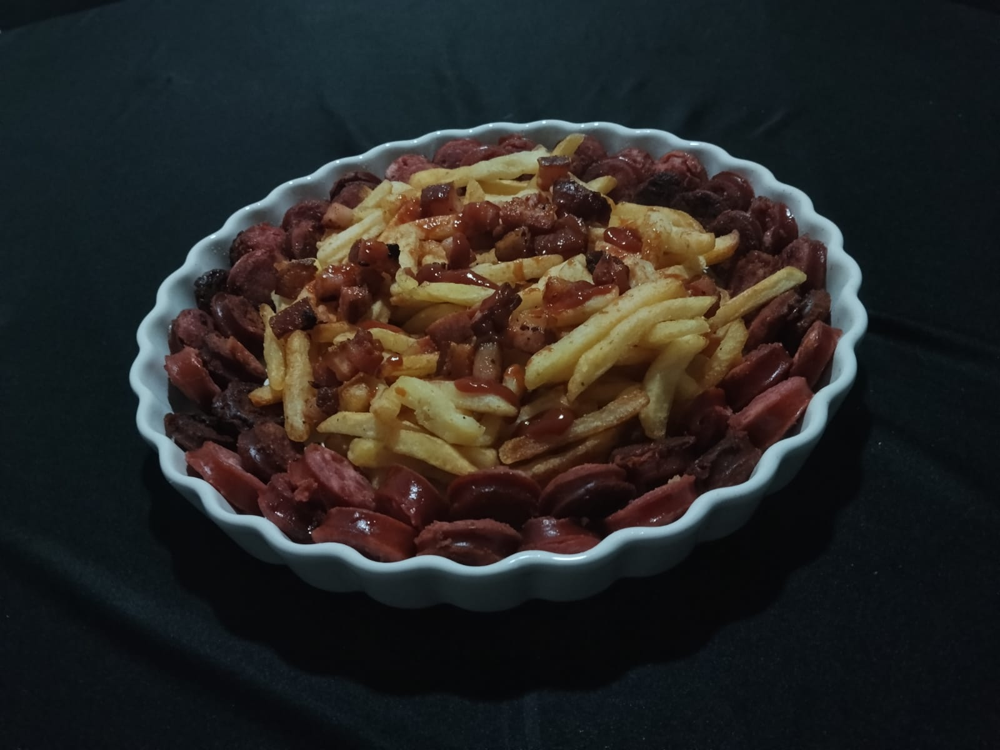

Composição registrada
Batatas fritas e linguiça dourada, servidas na travessa para dividir.
Faixa associada
Roda Viva · Chico Buarque
OUVIR / LOCALIZAR A FAIXANota de contexto
A canção, apresentada no Festival de 1967, usa a imagem de uma roda que gira e arrasta a vida. Sua letra permite uma leitura sobre as mudanças e forças que conduzem o cotidiano; no contexto da ditadura, essa imagem também ganhou ressonância política. Aqui, a relação é uma interpretação cultural.